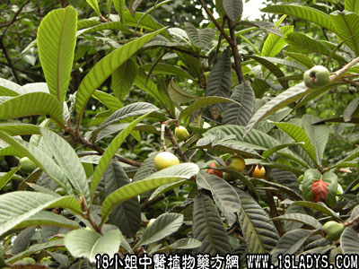

古籍名：枇杷《名医别录》。
植物名：枇杷。
生长环境：本品为常绿小乔木。栽培于园地，间有野生。
分布：广布全国各省，日本亦产之。
入药部分：叶（擦去毛）。
采集期：夏、秋。
自采地点：家种。
性味：性平、味淡。
功能：化气、止咳、除痰。
主治、用量和用法：肺燥咳嗽，配伍用。
验方：（治肺燥咳嗽方）枇杷叶4钱、山桔叶4钱、龙脷叶2钱、五爪龙4钱、清水二碗半，煎成一碗服。
（方解）本方枇杷叶泻肺下气；山桔叶、五爪龙化气除痰；龙脷叶润肺。合为清肺润燥止咳平稳之方。
附录：（根）治内伤咳血：干根1两、猪瘦肉适量，清水煎服。
（方歌）干咳由来燥肺金，龙脷枇杷两叶斟，五爪龙爬山桔叶，化气除痰润肺阴，干根一两煲瘦肉，内伤咳血见功深。
本文解释权归中药大全，本文地址：https://www.daquan.com/post/1577.html